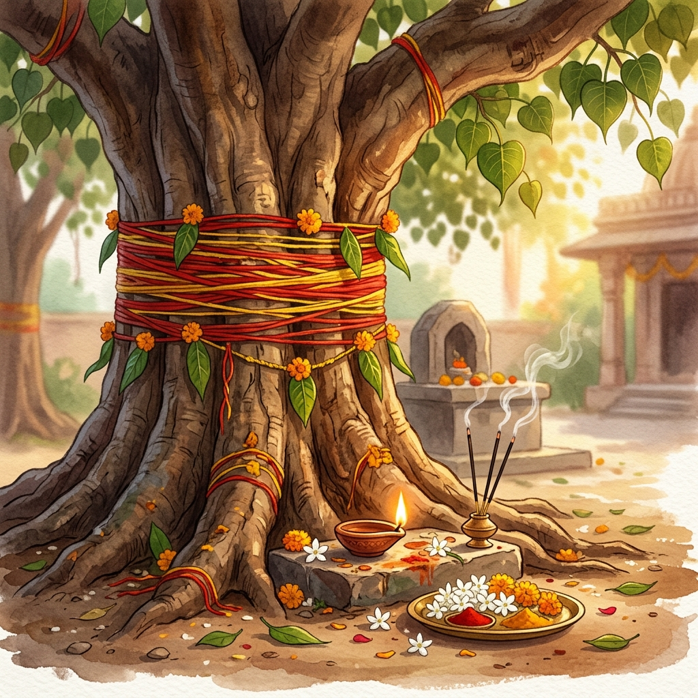
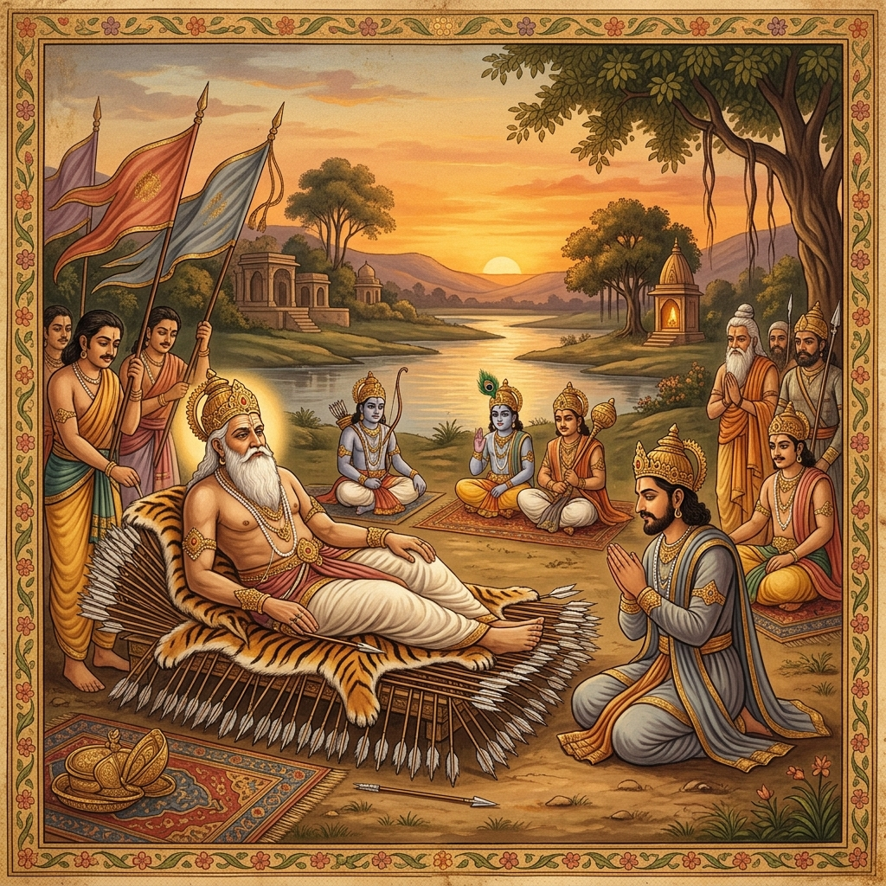

Amavasya is the New Moon day. It is the darkest night of the month. The moon is not seen in the sky.
Somvar means Monday — the day of Lord Shiva. When Amavasya falls on a Monday, it is called Somvati Amavasya. This is very rare. In a whole year, it comes only once or twice.
This day is believed to carry the blessings of both Lord Shiva and our ancestors (Pitra). Prayers offered with faith on this day are said to travel far.
Somvati Amavasya has been observed for thousands of years for all of these — and more.


This year, Somvati Amavasya is falling during Adhik Maas — a rare extra sacred month that comes only once every 30 years. The last time this happened was 30 years ago.
In our tradition, Adhik Maas is very dear to Lord Vishnu. And Somvati Amavasya is the day of Lord Shiva and our ancestors. When these three sacred energies come together — it is believed to be a once-in-a-generation blessing window.
Sri Mandir has arranged a very special puja at Gangotri Dham — one of India's most sacred temples — so that you can receive these blessings from your home.
This puja is being performed at Gangotri Dham — the sacred place where Goddess Ganga first came to Earth to bring peace to the souls of 60,000 ancestors. A deeply meaningful place for Pitru Shanti.